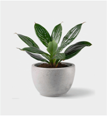

 This web platform offers a sophisticated glimpse into the world of elegant plants by providing live sensor data encompassing essential metrics like light exposure, soil moisture, and temperature. Access to real-time information is crucial for discerning the nuanced requirements of elegant plants, empowering enthusiasts and cultivators to refine their care practices and cultivate an environment that enhances the grace and beauty of these plants. The live data serves as a valuable tool for creating an exquisite and harmonious atmosphere conducive to the optimal growth and flourishing of elegant plant species.